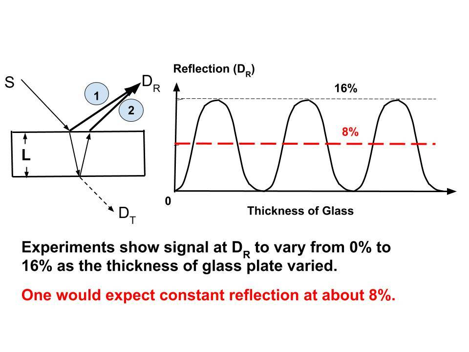

March 16, 2018; revised March 6, 2025
1. Feynman’s glass plate experiment, which he discussed on pages 17 - 35 in his book (see the references below), is discussed to lay the foundation for our new interpretation of quantum mechanics (QM).
This key post lays the foundation for the "nonlocality" argument. Even before I explain in detail what "nonlocality" is, I want to illustrate the simple fundamental idea behind it.
- This idea is: Even before a particle takes off, Nature evaluates all possible paths it could take and "comes up with a plan" for its motion. This happens AUTOMATICALLY, and some "unconventional paths" could result only in the case of microscopic particles like electrons and photons.
- This is why quantum mechanics appears to exhibit "strange phenomena." But this "unusual behavior" disappears naturally when particles increase in size.
- This simple idea, which physicist Richard Feynman came up with, is best illustrated by a simple experiment discussed in his book (see the References below). That experimental setup and the key result are shown in the figure below.

2. There are two "special features" in this experiment (it could be easier to print the post and read):
- The two surfaces of the glass slab are well-polished and are parallel to each other with high accuracy.
- The light is monochromatic, which means it has a well-defined wavelength.
3. Light from the source (S) is incident on a glass plate. Part of the light is reflected as indicated by the arrow #1, and the rest is transmitted through the glass and incident on the second surface where a part of it is reflected and goes back up as indicated by the arrow #2. The rest of the light emerges from the other side of the glass plate, as indicated by the dotted arrow. Two more things to be noted:
- The light signal in the reflected beams #1 and #2 is plotted on the right side of the figure.
- Variable on the X-axis of that figure is the thickness of the glass plate (L).
4. First, one would expect a fraction of light (about 8%) to be reflected via path #1. In fact, that is what one WILL observe with normal light (with all wavelengths in the visible region).
- However, as we can see in the experimental data to the right in the figure, that reflected signal varies from 0% to 16% as the thickness of the glass plate in increased for light with a well-defined wavelength (like from a laser).
- It is interesting to see that the reflected signal is zero (very low) at some thicknesses of the glass plate. This is a key feature that cannot be explained without our interpretation of QM. If anyone can explain it, please post at the discussion forum. Feynman explicitly said that he could not on p. 10 of his book.
5. Normally, one would expect the light reflected from the front surface (#1) to be at a constant level since photons are particles, i.e., a photon hitting the first surface would have no idea whether another interface existed below or not. Again, this is the key to the puzzle.
- For an analogy, consider the following case: Imagine a wire fence with holes a bit larger than a ball that we throw at it. Some balls (those that align with the holes) will go through those holes, and others will bounce back. Would it make any difference to the number of balls that bounce back if we install another fence beyond the first fence? Would it matter how far apart the fences are? Of course not.
- That is a reasonable analogy that shows how amazing the above observations—seen with the glass plate and the particles of light (photons)—are.
- However, such effects are seen only in the microscopic realm, which we will discuss later.
6. The following is how Feynman devised a "rule" that accounted for those observations in the figure above.
- For a photon to get to the detector DR, there are two paths available via the glass plate (#1 and #2), as shown in the figure. Feynman’s key assumption was that wave functions are established instantaneously via both those paths, and the vector sum of them would determine the possible path for a photon. These are not real waves, but just mathematical functions.
- In quantum electrodynamics (QED), this procedure of "summing up all possible paths" is given the fancy name, "path integrals."
- When the path difference between those two paths is equal to the wavelength of the light, those two contributions are cancelled out (there is a phase shift of 1800 for the two paths in addition). That is why one sees zero intensity at plate thicknesses that are multiples of an even number of half the wavelength.
- On the other hand, when the path difference between those two paths is equal to half the wavelength of the light, those two contributions add together. That is why one sees large intensity at plate thicknesses that are odd multiples of half the wavelength.
- Those are just technical details. Don't worry about them if you are "non-technical".
7. As long as one uses monochromatic light (and glass with no defects), one could in principle make the width of the plate arbitrarily large and those oscillations in the signal in the above figure persist. Thus, as long as those two possible paths are available (without any defects in the glass plate), the resultant wave function will enforce “no reflection” at the front surface regardless of how thick the glass plate is.
- On p. 21 of his book (Feynman, 1985), Feynman says, "..Today, with lasers (which produce a very pure, monochromatic light), we can see this cycle still going strong after more than 100,000,000 repetitions -- which corresponds to glass that is more than 50 meters thick..". This is an amazing observation!
8. Therefore, QM wave functions -- which take into account the phases and amplitudes of all possible paths -- are established instantaneously. This is a consequence of the nonlocality of nature that we will discuss in detail in upcoming posts.
- In the case of the above figure, there are two possible paths for a given photon -- indicated by the arrows #1 and #2 -- leading to DR as shown in the figure. It is important to note that the path of a given photon leaving the source (S) is predetermined from the start.
- Thus the question does not arise as to how the photon coming to the first surface “knows” that there is a second surface below it. There is no causality problem here, since the QM wave function is established at the very beginning because of the nonlocality of nature; if any changes are made to the experimental setup, the wave function will adjust instantaneously. Nonlocality means that physical proximity is unnecessary for this mechanism to work.
9. Now we will discuss a critical implication of Feynman’s “a particle exploring all possible paths” or “path integral” approach, that even Feynman did not realize.
- What happens when we increase the thickness of the (defect-free) glass plate to a value greater than the distance from the glass plate to the detector DR?
- Now, a photon reflecting off of the front surface would have had time to reach the detector before another photon going through the glass plate even reaches the lower glass-air surface, and starts coming back to the detector DR via the #2 path.
- You need to take time to think about this, which is why it could be better to print the post and read. I don't think the reviewers of our paper even realized this key point; see, bullet #3 of "Quantum Mechanics and Dhamma – Introduction".
10. Therefore, in the absence of wave functions establishing instantaneously across both possible paths (and thus undergoing destructive interference), there CANNOT be a zero signal at the detector DR, for ANY thickness of the glass plate if that thickness (L) is greater than the distance from the glass plate to the detector DR.
- This is the second aspect of the key observation that cannot be explained without our proposed interpretation of QM.
- Again, please comment on the discussion forum, if anyone can explain this observation differently.
11. With the above observation, this experiment also confirms that photons are not waves, which we established in the post, "Photons Are Particles Not Waves". In principle, two waves coming off of the front and back surfaces of the glass plate COULD destructively interfere to yield the zero intensities at those plate thicknesses.
- However, in this particular case (thickness of the glass plate larger than the distance from the glass plate to the detector DR), the "light wave" from the front surface would have arrived at the detector and be gone, by the time "light wave" from the back surface of the glass surface arrives at the detector.
- Therefore, destructive interference at the detector cannot occur in real waves propagating at the speed of light. What undergoes destructive interference are the mathematical wave functions representing a photon.
- This is why it is essential to distinguish between waves and wave functions; see, "What Is a Wave and What Is a Particle?".
12. Therefore, the zero intensity observed at some plate thicknesses is not due to the destructive interference of waves. Instead it is due to the combined contributions from those two paths (two wave functions).
- If the two wave functions destructively interfere, not even a single photon will be directed via either of those paths; all incident photons will pass through the glass slab.
- If the two wave functions interfere constructively, then the maximum possible number of photons will be directed via those paths, and the maximum possible signal (16%) will be observed at DR; the rest of the photons will go through the glass slab.
13. Therefore, it is essential to understand the difference between waves and wave functions. Light cannot really be called electromagnetic waves, even though the term is used even today. We have established that in the post, "Photons Are Particles Not Waves". I am proceeding slowly to establish a solid foundation, so that questions like this do not arise later on.
- Feynman's method says that even before a particle starts moving, wave functions for "all possible paths" for that particle are established instantaneously. The particle will then move along a path that results from the "summation over all those paths".
- These wave functions are vectors (i.e., they have a magnitude and a direction). Therefore, vector addition must be used in "summing up all possible paths". For those who are "non-technical," such details can be skipped; it is enough to get the basic idea.
- Professor Feynman describes this vector addition using a simple method with arrows in his book and four public lectures (see the References below).
14. To summarize the above discussion in another way, let me quote from Feynman's book (p.36):
- "This strange phenomenon of partial reflection by two surfaces can be explained for intense light by a theory of waves, but the wave theory cannot explain how the detector makes equally loud clicks as the light gets dimmer. Quantum electrodynamics "resolves" this wave-particle duality by saying that light is made of particles, but the price of this great advancement of science is retreat by physics to the position of being able to calculate only the probability that a photon will hit a detector, without offering a good model of how it actually happens".
- Our proposed theory shows precisely how it happens.
15. As we will discuss in the upcoming posts, we point out that Feynman’s idea of a photon exploring all possible paths is none other than the enforcement of nonlocality; Feynman's QED implicitly assumed nonlocality.
- A wave function is instantaneously set up over all space taking into account the phases for all possible paths; there is no spatial limitation. This is why two particles across the universe could still be entangled; see, "Quantum Entanglement – We Are All Connected".
- In the next post we will show that in the above case, a photon will actually "explore ALL possible paths", an infinite number of them! However, only those two paths came into play in the above discussion, because all others cancel out at ALL TIMES.
Any questions on these QM posts can be discussed at the discussion forum: "Quantum Mechanics – A New Interpretation".
REFERENCES
1. Richard Feynman, "QED: The Strange Theory of Light and Matter", Princeton University Press (1985).
2. The above book is based on a set of simple lectures delivered to non-physicists, and could be useful especially if one does not have access to the book:
QED: Photons — Corpuscles of Light — Richard Feynman (1/4)
16 de março de 2018; revisado em 6 de março de 2025
1. O experimento da placa de vidro de Feynman, que ele abordou nas páginas 17 a 35 de seu livro (veja as referências abaixo), é discutido para estabelecer as bases de nossa nova interpretação da mecânica quântica (MQ).
Este ensaio fundamental estabelece as bases para o argumento da “não localidade”. Antes mesmo de explicar em detalhes o que é “não localidade”, quero ilustrar a ideia fundamental e simples por trás dela.
- Essa ideia é: mesmo antes de uma partícula se deslocar, a Natureza avalia todos os caminhos possíveis que ela poderia seguir e “elabora um plano” para seu movimento. Isso acontece AUTOMATICAMENTE, e alguns “caminhos não convencionais” só poderiam ocorrer no caso de partículas microscópicas, como elétrons e fótons.
- É por isso que a mecânica quântica parece apresentar “fenômenos estranhos”. Mas esse “comportamento incomum” desaparece naturalmente à medida que as partículas aumentam de tamanho.
- Essa ideia simples, concebida pelo físico Richard Feynman, é melhor ilustrada por um experimento simples discutido em seu livro (veja as Referências abaixo). A configuração experimental e o resultado principal são mostrados na figura abaixo.
2. Há duas “características especiais” nesse experimento (pode ser mais fácil imprimir o ensaio e ler):
- As duas superfícies da placa de vidro são bem polidas e estão paralelas uma à outra com alta precisão.
- A luz é monocromática, o que significa que possui um comprimento de onda bem definido.
3. A luz da fonte (S) incide sobre uma placa de vidro. Parte da luz é refletida, conforme indicado pela seta nº 1, e o restante é transmitido através do vidro e incide na segunda superfície, onde uma parte é refletida e retorna para cima, conforme indicado pela seta nº 2. O restante da luz emerge do outro lado da placa de vidro, conforme indicado pela seta pontilhada. Mais duas observações a serem feitas:
- O sinal de luz nos feixes refletidos nº 1 e nº 2 está representado no lado direito da figura.
- A variável no eixo X dessa figura é a espessura da placa de vidro (L).
4. Primeiramente, seria de se esperar que uma fração da luz (cerca de 8%) fosse refletida pelo caminho nº 1. De fato, é isso que se observará com a luz normal (com todos os comprimentos de onda na região visível).
- No entanto, como podemos ver nos dados experimentais à direita da figura, esse sinal refletido varia de 0% a 16% à medida que a espessura da placa de vidro aumenta para luz com um comprimento de onda bem definido (como a de um laser).
- É interessante observar que o sinal refletido é zero (muito baixo) em algumas espessuras da placa de vidro. Essa é uma característica fundamental que não pode ser explicada sem nossa interpretação da Mecânica Quântica. Se alguém puder explicar isso, por favor, poste no fórum de discussão. Feynman afirmou explicitamente que não conseguia explicar isso na página 10 de seu livro.
5. Normalmente, seria de se esperar que a luz refletida pela superfície frontal (n.º 1) permanecesse em um nível constante, já que os fótons são partículas; ou seja, um fóton que atingisse a primeira superfície não teria como saber se havia ou não outra interface abaixo dela. Mais uma vez, essa é a chave para o enigma.
- Para uma analogia, considere o seguinte caso: imagine uma cerca de arame com buracos um pouco maiores do que uma bola que jogamos contra ela. Algumas bolas (aquelas que se alinham com os buracos) passarão por esses buracos, e outras ricochetearão. Faria alguma diferença no número de bolas que ricocheteiam se instalássemos outra cerca além da primeira? Importaria a distância entre as cercas? Claro que não.
- Essa é uma analogia razoável que mostra o quão surpreendentes são as observações acima — feitas com a placa de vidro e as partículas de luz (fótons).
- No entanto, tais efeitos são observados apenas no âmbito microscópico, o que discutiremos mais adiante.
6. A seguir, vemos como Feynman elaborou uma “regra” que explicava essas observações na figura acima.
- Para que um fóton chegue ao detector DR, há dois caminhos disponíveis através da placa de vidro (n.º 1 e n.º 2), conforme mostrado na figura. A principal suposição de Feynman era que as funções de onda são estabelecidas instantaneamente por meio de ambos os caminhos, e que a soma vetorial delas determinaria o caminho possível para um fóton. Não se trata de ondas reais, mas apenas de funções matemáticas.
- Na eletrodinâmica quântica (QED), esse procedimento de “somar todos os caminhos possíveis” recebe o nome sofisticado de “integrais de caminho”.
- Quando a diferença de caminho entre esses dois caminhos é igual ao comprimento de onda da luz, essas duas contribuições se cancelam (há, além disso, um deslocamento de fase de 180° entre os dois caminhos). É por isso que se observa intensidade zero em espessuras de placa que são múltiplos de um número par da metade do comprimento de onda.
- Por outro lado, quando a diferença de caminho entre esses dois caminhos é igual à metade do comprimento de onda da luz, essas duas contribuições se somam. É por isso que se observa grande intensidade em espessuras de placa que são múltiplos ímpares da metade do comprimento de onda.
- Esses são apenas detalhes técnicos. Não se preocupe com eles se você não tiver conhecimentos técnicos.
7. Desde que se utilize luz monocromática (e vidro sem defeitos), seria possível, em princípio, aumentar arbitrariamente a largura da placa, e essas oscilações no sinal da figura acima persistiriam. Assim, desde que esses dois caminhos possíveis estejam disponíveis (sem nenhum defeito na placa de vidro), a função de onda resultante garantirá que “não haja reflexão” na superfície frontal, independentemente da espessura da placa de vidro.
- Na p. 21 de seu livro (Feynman, 1985), Feynman diz: “...Hoje, com os lasers (que produzem uma luz monocromática muito pura), podemos observar que esse ciclo continua forte após mais de 100.000.000 de repetições — o que corresponde a um vidro com mais de 50 metros de espessura...”. Essa é uma observação incrível!
8. Portanto, as funções de onda da Mecânica Quântica — que levam em conta as fases e amplitudes de todos os caminhos possíveis — são estabelecidas instantaneamente. Essa é uma consequência da não-localidade da natureza, que discutiremos em detalhes em futuros ensaios.
- No caso da figura acima, há dois caminhos possíveis para um determinado fóton — indicados pelas setas nº 1 e nº 2 — que levam a DR, conforme mostrado na figura. É importante observar que o caminho de um determinado fóton ao sair da fonte (S) já está predeterminado desde o início.
- Portanto, não surge a questão de como o fóton que chega à primeira superfície “sabe” que há uma segunda superfície abaixo dela. Não há problema de causalidade aqui, uma vez que a função de onda da Mecânica Quântica é estabelecida logo no início devido à não-localidade da natureza; se alguma alteração for feita na montagem experimental, a função de onda se ajustará instantaneamente. Não-localidade significa que a proximidade física é desnecessária para que esse mecanismo funcione.
9. Agora discutiremos uma implicação crítica da abordagem de Feynman de “uma partícula explorando todos os caminhos possíveis” ou da “integral de caminho”, que nem mesmo o próprio Feynman percebeu.
- O que acontece quando aumentamos a espessura da placa de vidro (sem defeitos) para um valor maior do que a distância entre a placa de vidro e o detector DR?
- Nesse caso, um fóton refletido na superfície frontal teria tempo de chegar ao detector antes que outro fóton, ao atravessar a placa de vidro, chegasse à superfície inferior de contato entre o vidro e o ar e começasse a retornar ao detector DR pelo caminho nº 2.
- É preciso dedicar um tempo para refletir sobre isso, e é por isso que talvez seja melhor imprimir o ensaio e ler. Não creio que os revisores do nosso artigo tenham sequer percebido esse ponto-chave; veja o item nº 3 de “Mecânica Quântica e Dhamma – Introdução”.
10. Portanto, na ausência de funções de onda que se estabeleçam instantaneamente em ambos os caminhos possíveis (e, assim, sofram interferência destrutiva), NÃO PODE haver um sinal zero no detector DR, para QUALQUER espessura da placa de vidro, se essa espessura (L) for maior do que a distância da placa de vidro até o detector DR.
- Esse é o segundo aspecto da observação fundamental que não pode ser explicado sem a interpretação da Mecânica Quântica que propomos.
- Mais uma vez, por favor, comente no fórum de discussão, caso alguém possa explicar essa observação de maneira diferente.
11. Com a observação acima, este experimento também confirma que os fótons não são ondas, o que estabelecemos no ensaio “Fótons são partículas, não ondas”. Em princípio, duas ondas que saem das superfícies frontal e traseira da placa de vidro PODERIAM interferir destrutivamente para produzir intensidades nulas nessas espessuras da placa.
- No entanto, neste caso específico (espessura da placa de vidro maior do que a distância da placa de vidro até o detector DR), a “onda de luz” da superfície frontal já teria chegado ao detector e se dissipado quando a “onda de luz” da superfície traseira da placa de vidro chegasse ao detector.
- Portanto, a interferência destrutiva no detector não pode ocorrer em ondas reais que se propagam à velocidade da luz. O que sofre interferência destrutiva são as funções de onda matemáticas que representam um fóton.
- É por isso que é essencial distinguir entre ondas e funções de onda; veja “O que é uma onda e o que é uma partícula?”.
12. Portanto, a intensidade zero observada em algumas espessuras da placa não se deve à interferência destrutiva de ondas. Em vez disso, deve-se às contribuições combinadas desses dois caminhos (duas funções de onda).
- Se as duas funções de onda interferirem destrutivamente, nem mesmo um único fóton será direcionado por qualquer um desses caminhos; todos os fótons incidentes passarão pela placa de vidro.
- Se as duas funções de onda interferirem construtivamente, então o número máximo possível de fótons será direcionado por esses caminhos, e o sinal máximo possível (16%) será observado em DR; o restante dos fótons atravessará a placa de vidro.
13. Portanto, é essencial compreender a diferença entre ondas e funções de onda. A luz não pode realmente ser chamada de ondas eletromagnéticas, embora o termo ainda seja usado hoje em dia. Já estabelecemos isso no ensaio “Fótons são partículas, não ondas”. Estou avançando devagar para estabelecer uma base sólida, de modo que perguntas como essa não surjam mais tarde.
- O método de Feynman afirma que, mesmo antes de uma partícula começar a se mover, as funções de onda para “todos os caminhos possíveis” dessa partícula são estabelecidas instantaneamente. A partícula se moverá, então, ao longo de um caminho que resulta da “soma de todos esses caminhos”.
- Essas funções de onda são vetores (ou seja, têm magnitude e direção). Portanto, a adição vetorial deve ser usada para “somar todos os caminhos possíveis”. Para quem não tem formação técnica, esses detalhes podem ser ignorados; basta compreender a ideia básica.
- O professor Feynman descreve essa soma vetorial usando um método simples com setas em seu livro e em quatro palestras públicas (veja as Referências abaixo).
14. Para resumir a discussão acima de outra forma, permitam-me citar o livro de Feynman (p. 36):
- “Esse estranho fenômeno de reflexão parcial por duas superfícies pode ser explicado, no caso da luz intensa, por uma teoria das ondas, mas a teoria das ondas não consegue explicar como o detector emite cliques igualmente altos à medida que a luz fica mais fraca. A eletrodinâmica quântica ‘resolve’ essa dualidade onda-partícula afirmando que a luz é composta de partículas, mas o preço desse grande avanço da ciência é o recuo da física para a posição de poder calcular apenas a probabilidade de um fóton atingir um detector, sem oferecer um bom modelo de como isso realmente acontece”.
- Nossa teoria proposta mostra precisamente como isso acontece.
15. Conforme discutiremos nos próximos ensaios, destacamos que a ideia de Feynman de um fóton explorando todos os caminhos possíveis nada mais é do que a imposição da não-localidade; a QED de Feynman assumia implicitamente a não-localidade.
- Uma função de onda é instantaneamente estabelecida em todo o espaço, levando em conta as fases de todos os caminhos possíveis; não há limitação espacial. É por isso que duas partículas em diferentes pontos do universo ainda poderiam estar entrelaçadas; veja “Entrelaçamento Quântico – Estamos Todos Conectados”.
- No próximo ensaio, mostraremos que, no caso acima, um fóton realmente “explorará TODOS os caminhos possíveis”, um número infinito deles! No entanto, apenas esses dois caminhos entraram em jogo na discussão acima, porque todos os outros se cancelam em TODOS OS MOMENTOS.
Quaisquer dúvidas sobre esses ensaios de Mecânica Quântica podem ser discutidas no fórum de discussão: “Mecânica Quântica – Uma Nova Interpretação”.
REFERÊNCIAS
1. Richard Feynman, “QED: A Estranha Teoria da Luz e da Matéria”, Princeton University Press (1985).
2. O livro acima é baseado em uma série de palestras simples ministradas a não físicos e pode ser útil, especialmente se a pessoa não tiver acesso ao livro:
QED: Fótons — Corpúsculos de Luz — Richard Feynman (1/4)